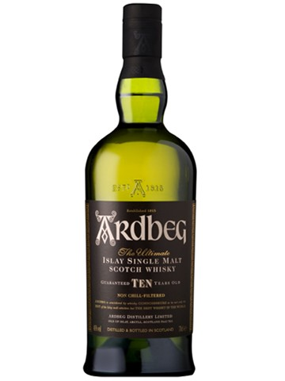
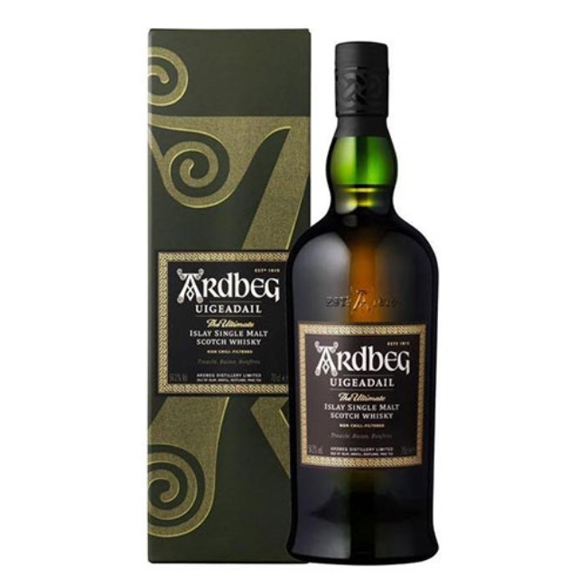

Ardbeg 10 Years Old
아드벡 10년은 강한 피트 향과 복합적인 맛으로 많은 위스키 애호가들에게 사랑받고 있습니다. 아드벡 10년은 냉각 여과 과정을 거치지 않았고 알코올 도수는 46%입니다. 입안에서 피트향이 강하게 느껴지며, 그 뒤를 이어 달콤한 바닐라와 시트러스, 약간의 초콜릿과 커피 맛이 느껴집니다.
Ardbeg Uigeadail
"우거다일"이라는 이름은 아드벡 증류소 근처의 호수인 로흐 우거다일( Loch Uigeadail)에서 유래되었습니다. 이 호수는 아드벡 증류소에 중요한 물 공급원입니다. 냉각 여과 과정을 거치지 않았고 알코올 도수는 54.2%이며 입안에서 피트와 스모크한 맛이 주를 이루며 그 뒤를 이어 달콤한 셰리, 건포도, 말린 과일의 맛이 느껴집니다.
Ardbeg Corryvreckan

"코리브레칸"이라는 이름은 북유럽 신화에서 유래된 코리브레칸 소용돌이에서 따왔으며 강렬하고 복잡한 맛과 향으로 많은 위스키 애호가들에게 사랑받고 있습니다. 코리브레칸은 숙성연수가 표기하지 않는 NAS 위스키입니다. 이 위스키의 도수는 57.1%로 캐스크 스트랭스로 병입되었습니다. 이는 물을 섞지 않은 상태로 원래의 강한 풍미를 느낄 수 있습니다. 이 위스키에서 첫번째로 느껴지는 것은 강렬한 피트와 스모키한 향입니다. 그 뒤를 이어 다크 초콜릿, 블랙베리, 그리고 약간의 바닐라와 후추 향이 느껴집니다.